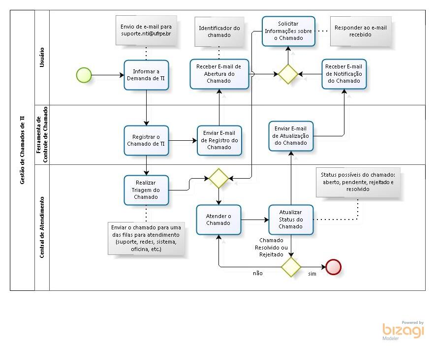

- Workflow pode auxilar a identificar e remover os processos ou passos desnecessários;
- Alterar a ordem dos passos pode tornar o processo mais eficiente. Por exemplo, alguns passos podem ser executadas em paralelo, ao invés de simultaneamente;
- Workflow segue uma ordem sequencial. Isso garante que todos os passos tenham sido completados corretamente (especialmente em áreas propensas a erros humanos) e que os checkpoints tenham sido atingidos antes de seguir em frente;
- Decisões que foram determinadas por pessoas podem ser feitas pelo workflow, baseando-se nas regras de negócio que podem ser feitas para representar deicisões humanas.
Referência: https://workflow.wordpress.com/2012/11/02/10-benefits-of-workflow/
Imagens
Fonte: http://www.nti.ufrpe.br/sites/nti.ufrpe.br/files/Atendimento%20Chamado.jpg
